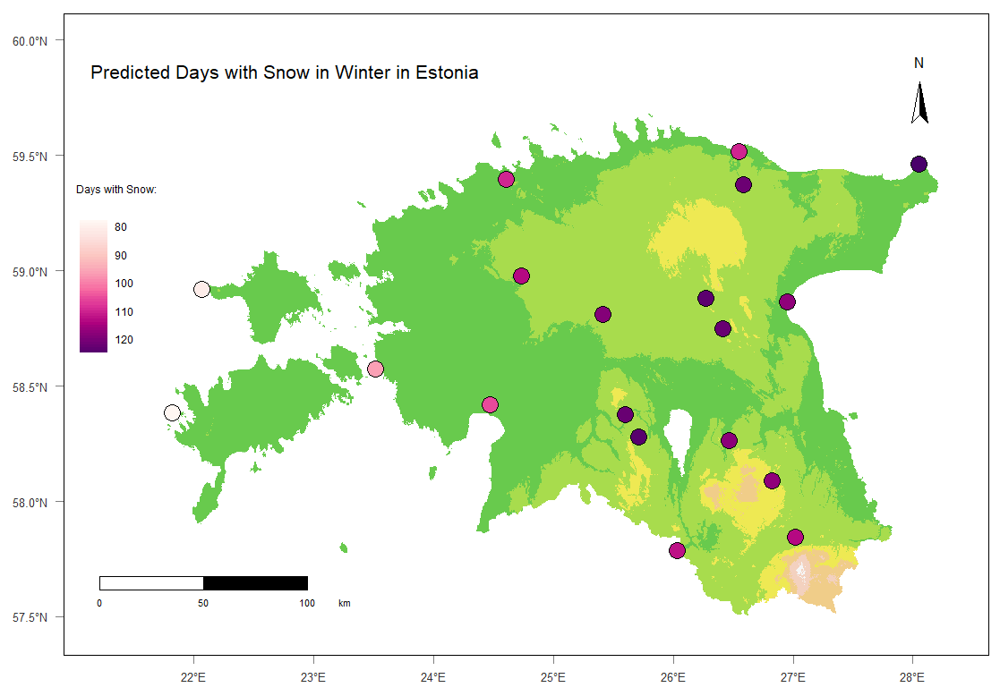
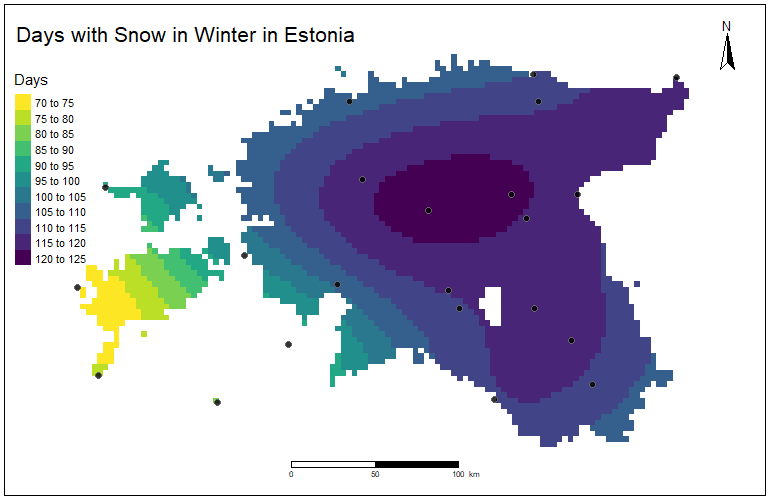

Predicting snow cover duration in Estonia
In this project I developed a model to predicted snow cover duration in Estonia. The analysis utilized historical temperature data, data on snow cover duration from 22 stations and a digital elevation model.
The basis of this analysis were:
Raster datasets comprising historical (1970 to 2000) monthly temperature information for December, January, and February for Estonia.
Vector data comprising snow cover duration data for 22 stations in Estonia
A digital elevation model of Estonia in raster format
Vector data on the borders of Estonia
I started with calculating average monthly winter temperatures from the historical temperature data sets. Then, using zonal statistics I extracted the average winter temperatures as well as the elevation values at the locations of the snow stations and combined the information into a single data frame and prepared it for regression analysis.
Then I conducted a correlation analysis to examine the relationship between snow cover duration and the variables: temperature, elevation, longitude and latitude and visualized these correlations using scatter plots with linear regression lines.
I thereafter developed a linear regression model to predict snow cover duration based on these predictors and evaluated the model’s coefficients to understand the nature of the individual relationships and their statistical significance. I then predicted snow cover duration using the regression coefficients of all variables and visualized the prediction results. They can be seen on Figure 1:

I then prepared the data for spatial interpolation using Kriging. I therefore created a spatial grid over Estonia using 4000 grid cells. I then computed a sample variogram of the snow duration variable and then plotted the variogram, helping to understand the spatial structure of the snow duration data.
I then defined key parameters (nugget, sill, range) based on the sample variogram and generated a variogram model with Gaussian function. I then fit the model to the sample variogram and plotted the model.
Based on the spatial correlation structure defined by the variogram, I then performed Kriging interpolation on the duration variable. Thereby I predicted values at unsampled locations.
I then converted the interpolation results into a raster object and visualized the Kriging predictions of estimated snow cover duration across Estonia. These are displayed in Figure 2.
